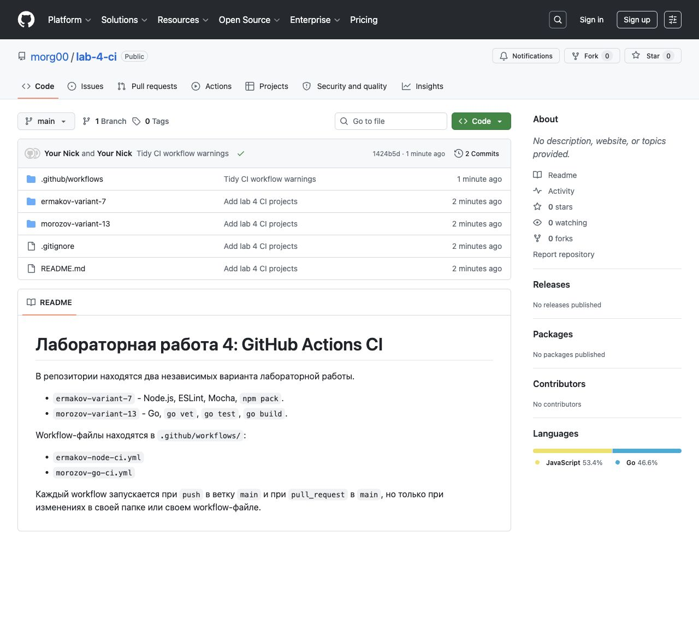
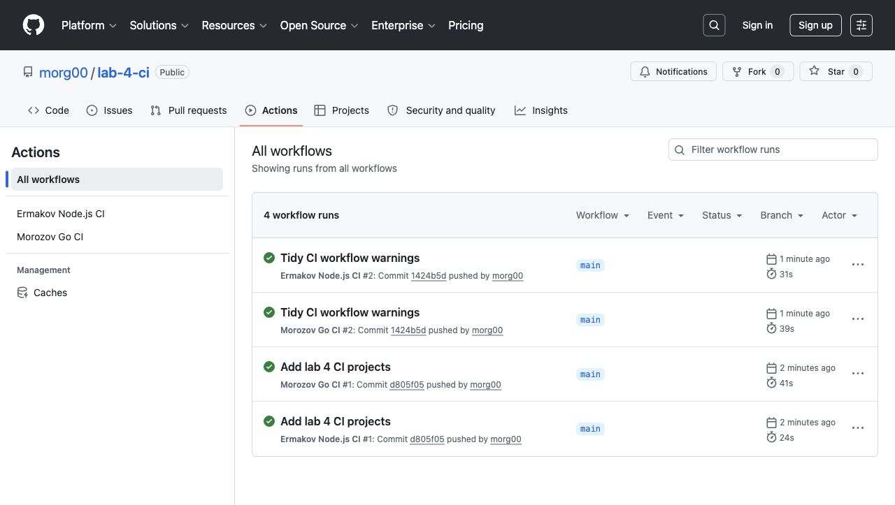
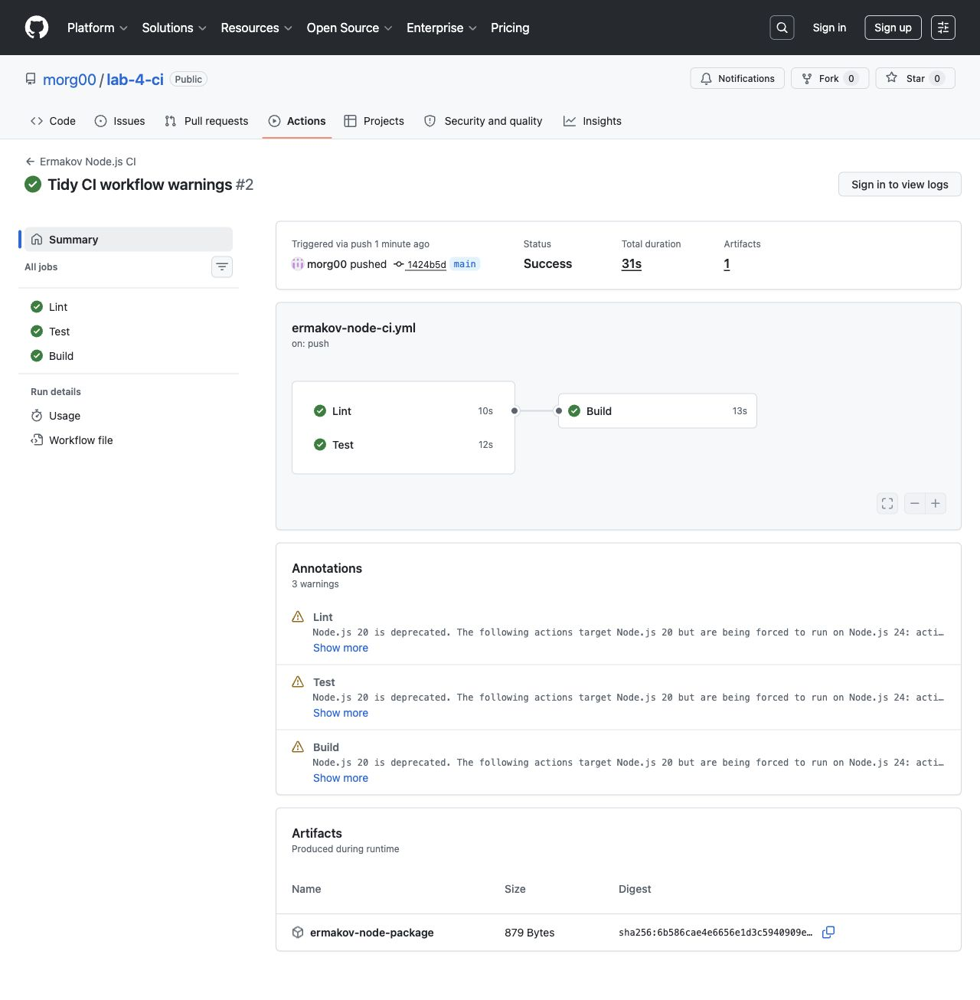

Студент: Ермаков Е.М.
Вариант: 7
Стек: Node.js, ESLint, Mocha, npm pack.
Репозиторий: https://github.com/morg00/lab-4-ci
ermakov-variant-7/
├── package.json
├── package-lock.json
├── eslint.config.js
├── src/
│ └── utils.js
└── test/
└── utils.test.js
Проект не имел готовой CI-конфигурации до добавления workflow. В корне репозитория создан файл .github/workflows/ermakov-node-ci.yml.
В файле src/utils.js реализованы функции:
add(a, b) isPalindrome(value) countWords(text) titleCase(text)
Тестами Mocha покрыты минимум три функции, фактически проверены все четыре.
Перед отправкой на GitHub выполнены команды:
npm install npm run lint npm test npm run build
Результат: ESLint прошел, 4 теста Mocha прошли, coverage 100%, команда npm pack создала пакет.
Workflow запускается при push и pull request в ветку main, если изменился Node.js-проект или сам workflow.
on:
push:
branches:
- main
paths:
- "ermakov-variant-7/**"
- ".github/workflows/ermakov-node-ci.yml"
Pipeline содержит три обязательных этапа:
Lint -> npm run lint Test -> npm test Build -> npm pack
Репозиторий успешно создан на GitHub.

Во вкладке Actions видны запуски двух workflow.

Workflow Ермакова завершился успешно: этапы Lint, Test и Build имеют статус Success.

git clone https://github.com/morg00/lab-4-ci.git cd lab-4-ci/ermakov-variant-7 npm ci npm run lint npm test npm run build